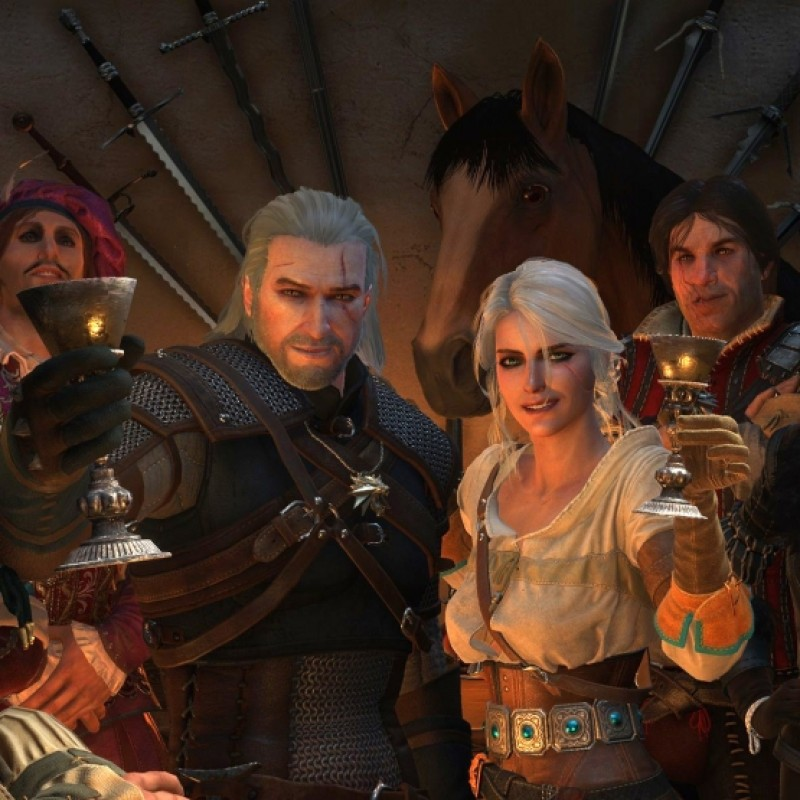
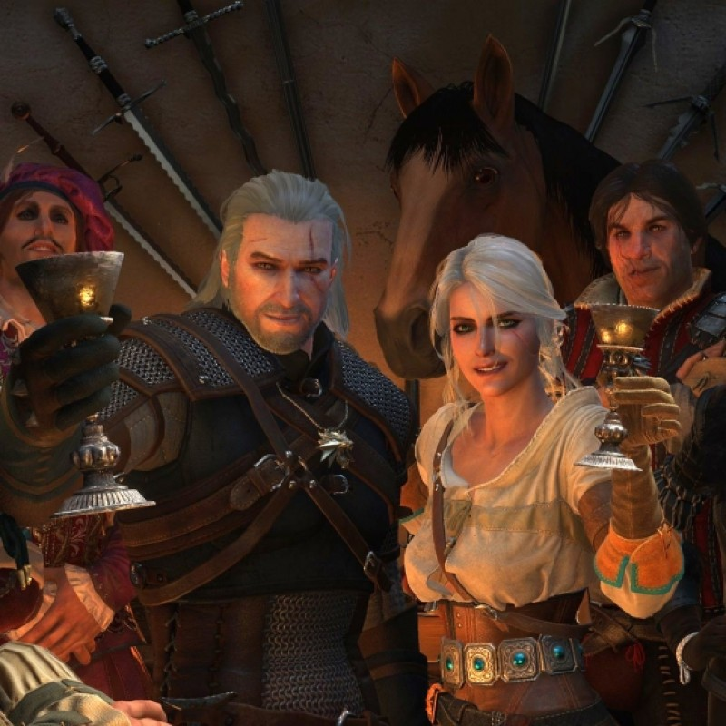
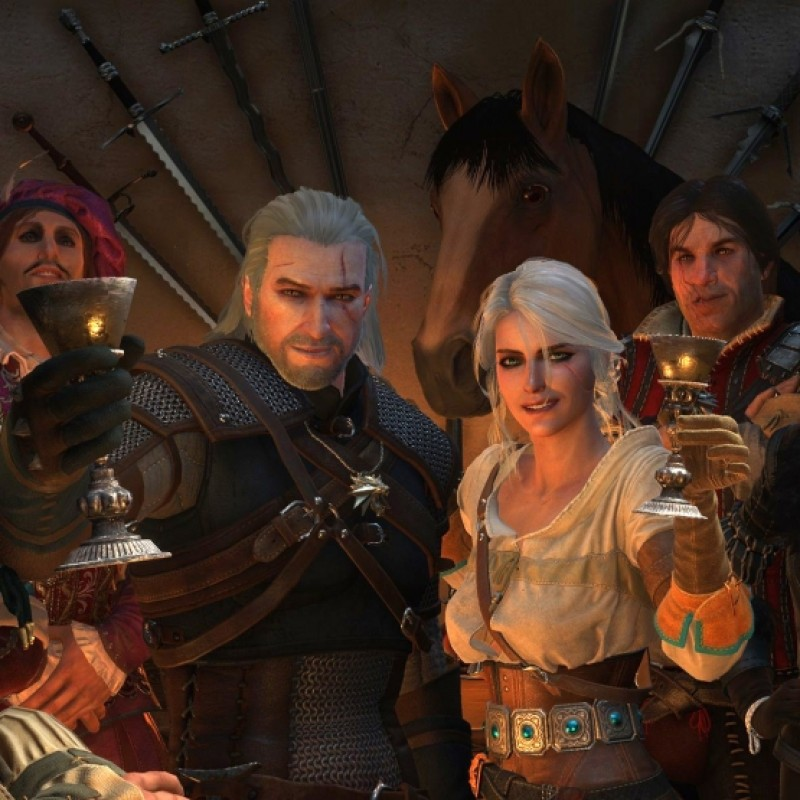

У центрі сюжету стоїть нове вторгнення Нільфгаарду, а також пошуки Цірі й конфлікт з Диким Гоном. Сюжет більше не поділяється на розділи, що стало можливим завдяки рушію REDengine 3. У гру повернулися такі персонажі з попередніх
частин як Весемир, Ламберт, Ескель, Любисток, Золтан Хівай, Трісс Меріольд, Шеала де Тансервілль, Лето з Ґулети. Повернення деяких персонажів залежить від ухвалених гравцем рішень у другій частині гри. Сюжет передбачає
36 кінцевих станів світу, до яких можуть привести дії гравця. Гра розпочинається роликом, який демонструє пошуки Йеннефер Ґеральтом та Весемиром. Пошуки їх заводять в село Білий Сад, де два відьмаки й зупиняються. Там
вони дізнаються про недавню битву між темерійцями та нільфгаардцями. Весемір зупиняється в таверні, а Ґеральт відправляється в табір нільфгаардців. Там командир гарнізону розповідає відьмаку про те, що Йеннефер у Визимі
— столиці окупованої Темерії. Але перед цим Ґеральт мав вбити грифона, щоб отримати інформацію. Відьмак повертається до Весеміра. Разом вбивши грифона, вони йдуть до таверни, де потім відбувається сутичка між відьмаками
та п'яними темерійськими патріотами. Останніх, відьмаки вбивають. На виході із таверни вони натикаються на нільфгаардців та Йеннефер, що несподівано з'явилась. Вона говорить, що імператор Емгир хоче аудієнції з Ґеральтом.
Весемир вирушає до Каер Морену у справах, а Ґеральт з Йеннефер вирушає до Емгира. Під час подорожі, на «Білого вовка» та його супутницю нападає Дикий Гон, але попри на це, вони приїжджають на імператорський прийом.
Імператор Емгир хоче, щоб Ґеральт знайшов його дочку Цірі, що нещодавно повернулася. І Ґеральт вирушає на пошуки…


 
